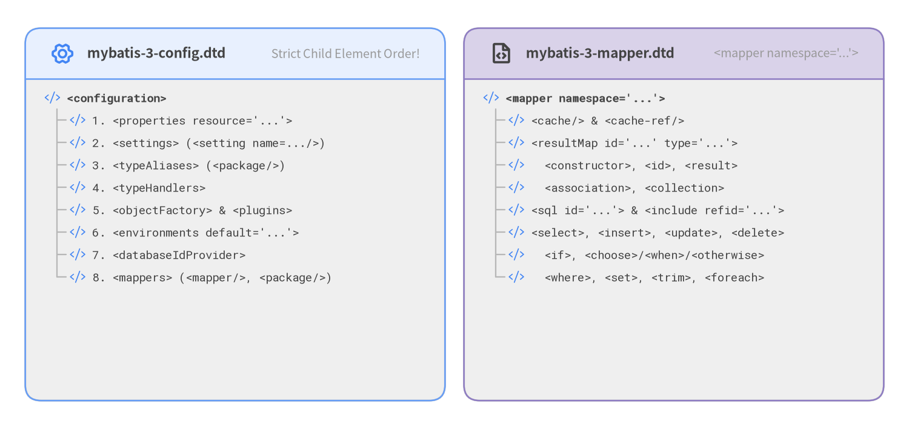

XML Configuration & Mapper 要素
XMLMapperEntityResolver によってオフライン解決される MyBatis 3 の2大 XML DTD/XSD スキーマリファレンスです。
mybatis-3-config.dtd: グローバル設定ファイル<configuration>の要素群。mybatis-3-mapper.dtd: 名前空間単位の<mapper namespace="...">・<resultMap>・動的 SQL タグ群。

Source Code
from drawlib.canvas import save, setup
from drawlib.fonts import FontMonoSpace, FontRoboto
from drawlib.icons import phosphor
from drawlib.smartarts import Panel, TreeNode
from drawlib.styles import Colors, Styles
setup(width=144, height=68, dpi=150)
left_panel = Panel(
"mybatis-3-config.dtd",
"Strict Child Element Order!",
style=Styles.Neutral,
header_style=Styles.PrimaryNeutral.patch(shape_line_width=1.2),
text_style=Styles.DarkBold.patch(text_size=10.8),
description_style=Styles.Muted.patch(text_size=9.5),
icon=phosphor.gear_six,
icon_style=Styles.PrimaryBold,
header_variant="filled",
header_height=8.0,
)
left_panel.draw((4.0, 4.5), width=66.5, height=59.0, align="bottom_left")
TreeNode.register_drawing_item(
name="xml_tag",
location="before",
padding_width=3.6,
function=phosphor.code,
style=Styles.Primary.patch(icon_color=Colors.Primary),
args={"width": 2.5},
)
mono_bold = Styles.DarkBold.patch(text_font=FontMonoSpace.ROBOTO_MONO_BOLD, text_size=9.2)
mono_reg = Styles.Dark.patch(text_font=FontMonoSpace.ROBOTO_MONO_REGULAR, text_size=9.2)
cfg_root = TreeNode(
"<configuration>",
text_style=mono_bold,
line_style=Styles.Muted.patch(line_width=1.1),
line_horizontal_margin=2.0,
line_horizontal_length=2.2,
line_vertical_margin=3.55,
).set_drawing_item("xml_tag")
for item in [
"1. <properties resource='...'>",
"2. <settings> (<setting name=.../>)",
"3. <typeAliases> (<package/>)",
"4. <typeHandlers>",
"5. <objectFactory> & <plugins>",
"6. <environments default='...'>",
"7. <databaseIdProvider>",
"8. <mappers> (<mapper/>, <package/>)",
]:
cfg_root.add(item, text_style=mono_reg).set_drawing_item("xml_tag")
cfg_root.draw(xy=(7.0, 52.5))
right_panel = Panel(
"mybatis-3-mapper.dtd",
"<mapper namespace='...'>",
style=Styles.Neutral,
header_style=Styles.SecondaryNeutral.patch(shape_line_width=1.2),
text_style=Styles.DarkBold.patch(text_size=10.8),
description_style=Styles.Muted.patch(text_size=9.5),
icon=phosphor.file_code,
icon_style=Styles.DarkBold,
header_variant="filled",
header_height=8.0,
)
right_panel.draw((73.5, 4.5), width=66.5, height=59.0, align="bottom_left")
map_root = TreeNode(
"<mapper namespace='...'>",
text_style=mono_bold,
line_style=Styles.Muted.patch(line_width=1.1),
line_horizontal_margin=2.0,
line_horizontal_length=2.2,
line_vertical_margin=3.55,
).set_drawing_item("xml_tag")
for item in [
"<cache/> & <cache-ref/>",
"<resultMap id='...' type='...'>",
" <constructor>, <id>, <result>",
" <association>, <collection>",
"<sql id='...'> & <include refid='...'>",
"<select>, <insert>, <update>, <delete>",
" <if>, <choose>/<when>/<otherwise>",
" <where>, <set>, <trim>, <foreach>",
]:
map_root.add(item, text_style=mono_reg).set_drawing_item("xml_tag")
map_root.draw(xy=(76.5, 52.5))
save()
xml <configuration> (mybatis-3-config.dtd)#
XMLConfigBuilder が解析する mybatis-config.xml のルート要素です。重要: DTD により子要素の記述順序が厳格に定められています。
<!ELEMENT configuration (properties?, settings?, typeAliases?, typeHandlers?,
objectFactory?, objectWrapperFactory?, reflectorFactory?, plugins?,
environments?, databaseIdProvider?, mappers?)>
xml <settings> & <setting>#
Configuration のグローバル挙動を制御します (<setting name="..." value="..."/>)。実務で重要な設定項目は以下の通りです。
設定名 (name) |
有効値 | デフォルト値 | 効果 |
|---|---|---|---|
mapUnderscoreToCamelCase |
true | false |
false |
DB カラム user_id を Java プロパティ userId に自動マッピングします。 |
cacheEnabled |
true | false |
true |
CachingExecutor (L2 キャッシュ) の全体有効／無効。 |
lazyLoadingEnabled |
true | false |
false |
<association> / <collection> の遅延ロードプロキシを有効化します。 |
aggressiveLazyLoading |
true | false |
false |
アクセスされた遅延プロパティのみをオンデマンドで読み込みます。 |
localCacheScope |
SESSION | STATEMENT |
SESSION |
マルチインスタンス環境や Spring 連携時は STATEMENT に設定して L1 キャッシュを文単位に制限します。 |
defaultExecutorType |
SIMPLE | REUSE | BATCH |
SIMPLE |
デフォルトの Executor 実装。 |
defaultStatementTimeout |
正の整数（秒） | null |
デフォルトの JDBC クエリタイムアウト秒数。 |
jdbcTypeForNull |
NULL | VARCHAR | OTHER |
OTHER |
Oracle 等で null バインド時のエラーを防ぐには NULL を指定します。 |
logImpl |
SLF4J | LOG4J2 | STDOUT_LOGGING ... |
自動検出 | LogFactory が使用するロガー実装を明示指定します。 |
xml <environments>, <transactionManager> & <dataSource>#
接続先データベース環境を定義します (<environments default="development"><environment id="development">...)。
<transactionManager type="JDBC | MANAGED"/>:JDBCはJdbcTransactionにより JDBC コネクションの commit/rollback を直接制御し、MANAGEDはコンテナ側にトランザクション管理を委ねます。<dataSource type="POOLED | UNPOOLED | JNDI"/>:POOLEDはPooledDataSource（コネクションプール）を構成します（driver,url,username,password,poolMaximumActiveConnections,poolPingQuery等）。
xml <mappers>#
SQL マッパーを Configuration に登録します（以下4形式のいずれかを使用）。
<mapper resource="org/mybatis/example/AuthorMapper.xml"/>（クラスパス相対パス）<mapper class="org.mybatis.example.AuthorMapper"/>（Java インターフェースクラス）<mapper url="file:///var/mappers/AuthorMapper.xml"/>（URL 指定）<package name="org.mybatis.example"/>（パッケージ内の全インターフェースを一括スキャン）
xml <select>, <insert>, <update> & <delete>#
<mapper namespace="..."> 内の SQL ステートメント定義要素です (XMLStatementBuilder が解析)。
| 属性名 | 対象要素 | 説明 |
|---|---|---|
id |
全要素 | 名前空間内のメソッド名に対応する必須識別子 (findById 等)。 |
resultType |
<select> |
戻り値の完全修飾クラス名または型エイリアス (User, map, int 等)。resultMap と排他。 |
resultMap |
<select> |
外部の <resultMap id="..."> を参照します。JOIN やコンストラクタ注入時に使用。 |
flushCache |
全要素 | <select> はデフォルト false、更新系はデフォルト true。 |
useCache |
<select> |
<select> のデフォルトは true（L2 キャッシュに結果を保存）。 |
useGeneratedKeys |
<insert>, <update> |
JDBC getGeneratedKeys() で自動採番値を keyProperty に格納します。 |
timeout / fetchSize |
全要素 / <select> |
ステートメント個別のクエリタイムアウト秒数および JDBC フェッチサイズ。 |
xml <resultMap>, <id>, <result>, <constructor>, <association> & <collection>#
JDBC ResultSet 処理のボイラープレートを劇的に削減する MyBatis 最重要要素です。
<resultMap id="detailedBlogResultMap" type="Blog">
<constructor>
<idArg column="blog_id" javaType="_int" name="id"/>
</constructor>
<result property="title" column="blog_title"/>
<association property="author" javaType="Author">
<id property="id" column="author_id"/>
<result property="username" column="author_username"/>
</association>
<collection property="posts" ofType="Post">
<id property="id" column="post_id"/>
<result property="subject" column="post_subject"/>
</collection>
</resultMap>
| 子要素 | 主な属性 | 役割 |
|---|---|---|
<constructor> |
<idArg>, <arg> (column, javaType, name) |
コンストラクタや Java record に引数を注入します。 |
<id> |
property, column, javaType, jdbcType, typeHandler |
主キーマッピング。ネスト JOIN 時の親オブジェクト識別 (CacheKey) で極めて重要です。 |
<result> |
property, column, javaType, jdbcType, typeHandler |
通常のフィールド／セッターへのマッピング。 |
<association> |
property, javaType, resultMap, select, columnPrefix, fetchType |
1:1 の関連オブジェクトマッピング。 |
<collection> |
property, ofType, javaType, resultMap, select, columnPrefix |
1:N のコレクションマッピング（要素型は ofType で指定）。 |
<discriminator> |
column, javaType, <case value="..." resultMap="..."/> |
カラム値に応じて適用する ResultMap を動的に切り替えます。 |
xml <if>, <choose>, <when>, <otherwise>, <where>, <set>, <trim>, <foreach> & <bind>#
OGNL 式で評価される動的 SQL タグ群 (org.apache.ibatis.scripting.xmltags) です。
| XML タグ | 主な属性 | 動作と SQL 生成ルール |
|---|---|---|
<if> |
test="ognlExpr" |
OGNL 条件式 test が true の場合のみ内部の SQL を出力します。 |
<choose> / <when> / <otherwise> |
<when test="ognlExpr"> |
switch / case 分岐。最初に一致した <when> または <otherwise> を適用します。 |
<where> |
— | 内部が空でない場合に WHERE を補い、先頭の余分な AND / OR を自動除去します。 |
<set> |
— | UPDATE 文で SET を補い、末尾の余分なカンマ , を自動除去します。 |
<trim> |
prefix, prefixOverrides, suffix, suffixOverrides |
任意の接頭辞・接尾辞の付与／除去を行う汎用トリム要素 (TrimSqlNode)。 |
<foreach> |
collection, item, index, open, separator, close, nullable |
List・Set・配列・Map を反復展開し、IN (?, ?, ?) やバルク VALUES を生成します。 |
<bind> |
name="varName", value="ognlExpr" |
OGNL 式の評価結果を変数に束縛します（例: <bind name="pat" value="'%' + q + '%'"/>）。 |
<sql> & <include> |
<sql id="...">, <include refid="..."> |
再利用可能な SQL 断片を定義・展開します。 |
xml <cache> & <cache-ref>#
現在のマッパー名前空間の L2 キャッシュを構成（<cache eviction="LRU" flushInterval="60000" size="512" readOnly="false" blocking="false"/>）、または他名前空間の L2 キャッシュを参照共有（<cache-ref namespace="com.example.UserMapper"/>）します。